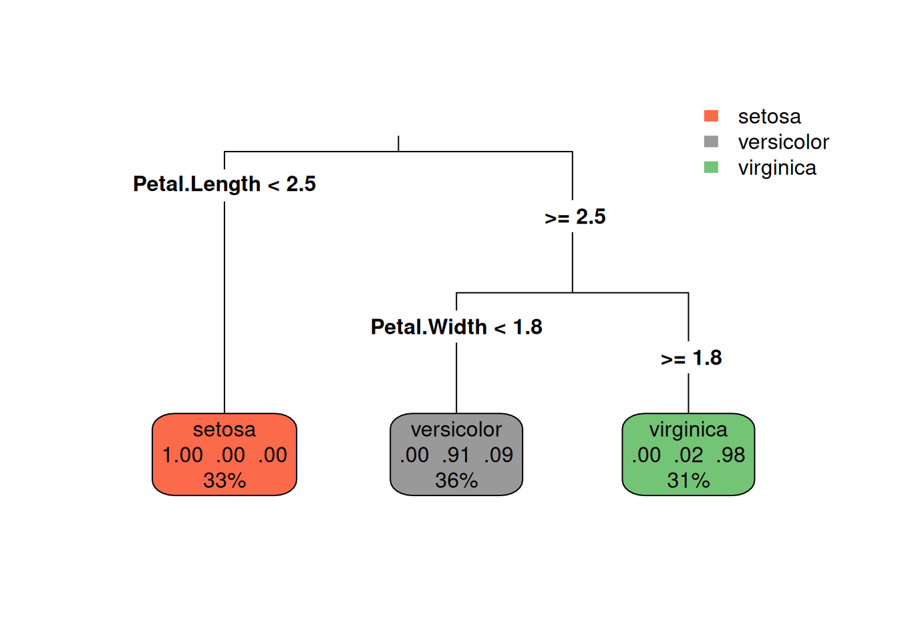
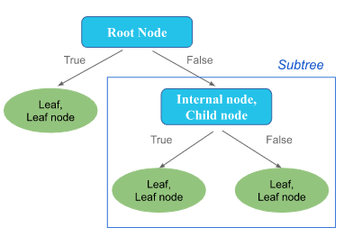
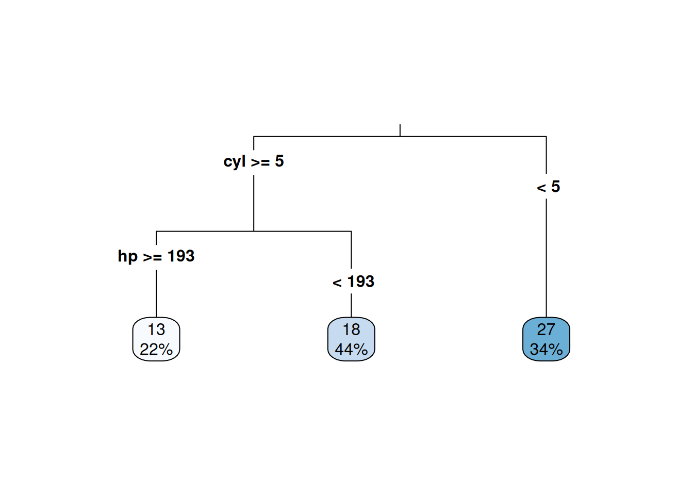

9 Decision Trees
A Decision Tree is one of the most intuitive and powerful tools in data analysis and machine learning.
It mimics the way humans make decisions – by asking a sequence of simple questions that split a problem into smaller, clearer parts.
A decision tree functions like a flowchart that asks a sequence of if-then questions about the data:
Each internal node represents a test or question about a feature/variable (e.g., “Is age > 30?” or “Is he/she male?”).
Each branch represents the possible outcome of that test.
Each leaf node provides the final prediction – either a category (for classification) or a numeric value (for regression).

So, you can see that a decision tree is organized as a hierarchy of nodes connected by branches, similar to an inverted tree structure.
Root Node: The root node is the topmost in the tree. It represents the starting point of the decision process and corresponds to the entire dataset. The rrot node asks the first and most important question – the one that best separated the data into distinct groups based on a chosen attribute.
Internal Nodes (or Child Nodes): Internal nodes are the decision points that come after the root. Each represents a test or question on one feature of the data. The outcome of this test leads to further branches and nodes.
Branches (or edges): Branches represent the possible outcomes of a test at a node. Each branch carries the data that satisfies (True) or fails (False) the node’s condition. The tree continues to grow along each branch until a stopping criterion is met.
Leaf Nodes (or Terminal Nodes): Leaf nodes are the endpoints of the tree – where no further splitting occurs. Each leaf node provides a final output of the model, which can be a class label (for classification tasks) or a continuous value (for regression tasks). Leaf nodes correspond to the purest possible groups based on the chosen splitting rules.
Subtrees: A subtree is any section of the overall tree that can be considered a smaller, self-contained decision tree. Each subtree has its own root, internal nodes, branches, and leaf nodes.
9.1 Types of Decision Trees
Decision trees can be divided into two main types based on the nature of the target variable. Although the overall structure of the tree remains the same – with nodes, branches, and leaves – the way they make predictions differs depending on whether the target variable is categorical or numerical.
There are two main types of Decision Trees:
- Classification Trees
- Regression Trees
9.1.1 Classification Trees
A classification tree is used when the target variable is categorical, meaning it represents distinct classes, categories or labels (e.g., “Yes/No”, “Low/Medium/High”, “Survived/Not Survived”). The goal of a classification tree is to assign each observation to one of the predefined classes based on the features of the data.
The tree splits the data into groupd that are as similar as possible in terms of the target class. Each question (or split) tries to separate different classes more clearly. At the end of the tree, each leaf node contains cases that mostly belong to the same category – ans that category is assigned as the prediction for any new observation that falls into that leaf.
Example The iris dataset is one of the most famous examples in datascience and machine learning. It contains measurements of 150 iris flowers from three different species: Iris setosa, Iris versicolor, and Iris virginica. The dataset includes four variables: Sepal.Length (Length of the sepal), Sepal.Width (Width of the sepal), Petal.Length (Length of the petal), and Petal.Width (Width of the petal). The goal is to classify the species of an iris flower based on these measurements. So, the target variable is Species, which is categorical with three levels: setosa, versicolor, and virginica.

The goal is to build a Classification Tree that predicts the species of a flower based on its measured characteristics.
This is a classification tree built to predict the species of iris flowers based on their sepal and petal measurements.
Each box (node) represents a decision or a group of flowers with similar characteristics.
The top box is the root node, which contains all 150 flowers. The first split is based on Petal.Length. If Petal.Length is less than or equal to \(2.5\) cm, the flower is classified as Iris setosa (left branch). If Petal.Length is greater than \(2.5\) cm, the tree asks another question about Petal.Width.”Is Petal.width < 1.8?” If yes, the flower is classified as Iris versicolor (middle branch). If no, it is classified as Iris virginica (right branch). These two species are harder to separate than Iris setosa, but the tree still achieves a very high accuracy (around \(90-98\%\)).
The numbers in the boxes provide numbers like 1.00 .00 .00 that means \(100\%\) of samples in that groupd belong to the Iris setosa species. The numbers .00 .91 .09 means \(91\%\) of samples in that group belong to Iris versicolor and \(9\%\) belong to Iris virginica. And, .02 .98 .00 means \(98\%\) of samples in that group belong to Iris virginica and \(2\%\) belong to Iris versicolor. Thus, the model’s decisions are based on probabilities – and each leaf node represents the most likely class for that group of samples.
So, each path from the top to a leaf node represents a classification rule.
- If
Petal.Length< 2.5, thenSpecies` = Iris setosa. - If
Petal.Length\(\ge\) 2.5andPetal.Width<= 1.8, thenSpecies= Iris versicolor. - If
Petal.Length\(\ge\) 2.5andPetal.Width> 1.8, thenSpecies= Iris virginica.
Note
Why Only Two Variables Appear in the Tree?
The tree does not try to use every variable – it picks the ones that best separate the data. In the iris dataset, the petal measurements are much more distinctive between species than the sepal ones, so the algorithm quickly finds that using just Petal.Length and Petal.Width gives almost perfect classification. If we removed the petal variables and built a new tree, we would see the sepal variables appear instead.
9.1.2 Regression Trees
A regression tree is used when the target variable is continuous or numerical (e.g., house prices, temperatures, or ages).
Each split in a regression tree aims to minimize the variance (or mean squared error) within each group, creating subsets of data that are as similar as possible in terms of the target variable. At the end of the tree, each leaf node contains a predicted value, which is typically the average of the target variable for all observations that fall into that leaf.
Example The mtcars dataset contains data on fuel consumption and performance for \(32\) automobiles (1973–74 models). The goal is to predict the miles per gallon (mpg) of a car based on its features: disp (Engine displacement), hp (Gross horsepower), wt (Weight), and cyl (number of cylinders).

Based on this regression tree, we can see how the model predicts mpg based on number of cylinders (cyl) and horsepower (hp).
Each box (node) represents a decision or a group of cars with similar characteristics, and the numbers in the boxes represent the average mpg for that group of cars.
The first split is based on cyl and tells us that the number of cylinders is the most important factor in predicting mpg. “Is cyl \(\ge 5\)?” If no, go to right branch that leaf node shows that cars with small engines ( less than 5 cylinders) have an average mpg of \(27\) (\(34\%\) of cars). If yes, go to left branch that asks another question about hp. “Is hp \(\ge\) 193?” If no, go to right branch that leaf node shows that cars with large engines (5 or more cylinders and lower horsepower) have an average mpg of \(18\) (\(44\%\) of cars). If yes, go to left branch that leaf node shows that cars with large engines (5 or more cylinders and higher horsepower) have an average mpg of \(13\) (\(22\%\) of cars).
So, this tree tells us:
- Fewer cylinders generally lead to better fuel efficiency (higher
mpg). - Higher horsepower tends to decrease
mpg, especially in cars with more cylinders.
This model translates to a few simple, interpretable rules that summarize how car design affects performance.
9.2 Classification and Regression Tree (CART) Algorithm
The term classification and regression tree (CART) refers to a specific algorithm developed by Breiman et al. in 1984 for constructing decision trees. It provides a unified framework for building both Classification Trees and Regression Trees.
The CART works by recursively splitting the dataset into smaller and smaller groups (nodes) based on the variable and threshold that best separate the data according to the target variable.
It follows these main steps:
- Start with the full dataset (root node) All observations are included in one group.
- Find the best split For every variable, the CART tests possible cut points and it chooses the one that makes the resulting groups as pure (homogeneous) as possible.
- Split the data into two subgroups The CART always creates binary splits (two branches) at each node.
- Repeat the process (recursion) Each subgroup becomes a new node, and the CART continues splitting until a stopping criterion is met (e.g., minimum node size, maximum tree depth, or no further improvement in purity).
- Prun the tree (optional) To avoid overfitting, the CART may prune the tree by removing branches that do not provide significant predictive power.
9.2.1 Metrics used in CART
To decide best split, CART uses different metrics depending on whether it is building a Classification Tree or a Regression Tree.
9.2.1.1 For Classification Trees
The CART algorithm typically uses impurity measures to evaluate how well a split separates the classes.
The most common impurity measures are:
- Gini impurity
- Entropy (information gain)
- Classification error
Gini Index
The Gini index is defined as \[ \text{Gini} = 1 - \sum\limits_{i=1}^{k} p_i^2 \] where \(p_i\) is the proportion of class \(i\) in the node.
If \(\text{Gini} = 0\), the node is pure (all observations belong to one class). If \(\text{Gini} = 0.5\) (binary case), the node is completely mixed (\(50\%\) each class).
For example, if a node has \(90\%\) setosa and \(10\%\) versicolor, \(\text{Gini} = 1 - (0.9^2 + 0.1^2) = 0.18\). The node is fairly pure.
Entropy (Information Gain)
The Entropy is defined as \[ \text{Entropy} = - \sum\limits_{i = 1}^k p_i \log_2(p_i) \] where \(p_i\) is the proportion of class \(i\) in the node.
If \(\text{Entropy} = 0\), it means the node is perfectly pure while \(\text{Entropy} = 1\) means that the node has maximum disorder (completely mixed).
CART usually uses the Gini Index because it is computationally faster and produces results very similar to those obtained with Entropy.
Classification Error
The classification error is a simpler impurity measure defined as \[ \text{Error} = 1 - \max(p_i) \] where \(\max(p_i)\) is the proportion of the most common class in the node.
If all samples belong to one class, \(\max(p_i) = 1\) and Error = 0 (perfectly pure). If the classes are equally mixed, \(\max(p_i) = 0.5\) and Error = 0.5.
This measure is easy to interpret but less sensitive than the Gini Index or Entropy, so it is mainly used for reporting accuracy, not for choosing splits.
9.2.1.2 For Regression Trees
When the target variable is numeric, CART measures how similar the values are within each node.
Instead of impurity, it uses the variance or the Mean Squared Error (MSE).
9.2.2 Variance
The variance of a node is defined \[ \text{Var}(Y) = \frac{1}{n} \sum\limits_{i=1}^{n} (y_i - \bar{y})^2 \] where \(y_i\)s are observed values, \(\bar{y}\) is the mean of the node, and \(n\) is the number of observation in each node.
A lower variance means that the values in that node are closer to each other, so the node is more ‘pure’ in terms of numeric outcomes.
9.2.3 Mean Squared Error (MSE)
CART typically uses MSE as the splitting criterion, which is conceptually similar to variance.
The MSE is defined as \[\text{MSE} = \frac{1}{n} \sum\limits_{i=1}^n (y_i - \hat{y})^2 \] where \(\hat{y}\) is the predicted value for that node (usually the mean).
The best split is the one that reduces the total MSE the most — in other words, the children nodes have smaller errors than the parent node.
Note
In a Regression Tree, the predicted value for each node is simply the mean of that node – so, \(\hat{y} = \bar{y}\). When that is the case: \[ \text{MSE} = \text{Var}(Y) \]
Example: Suppose a node contains five cars with their fuel efficiency (mpg) values:
| Car | mpg |
|---|---|
| A | 10 |
| B | 12 |
| C | 15 |
| D | 20 |
| E | 22 |
First, Compute the variance before splitting as: \[ \bar{y} = \frac{10 + 12 + 15 + 20 + 22}{5} = 15.8 \] and then \[ \text{Var}_{\text{parent}} = \frac{(10-15.8)^2 + (12-15.8)^2 + (15-15.8)^2 + (20-15.8)^2 + (22-15.8)^2}{5} = 21.36 \] Then, we try a possible split
- Left node: cars with small engines → mpg = [10, 12, 15]
- Right node: cars with large engines → mpg = [20, 22]
Compute the variances for each node:
Left node: \[
\bar{y}_L = 12.33,\quad \text{Var}_L = \frac{(10-12.33)^2 + (12-12.33)^2 + (15-12.33)^2}{3} = 4.22
\] Right node: \[
\bar{y}_R = 21.0,\quad \text{Var}_R = \frac{(20-21)^2 + (22-21)^2}{2} = 1.0
\] Then, Compute the weighted average of child variances \[
\text{Var}_{\text{after split}} = \frac{3}{5}(4.22) + \frac{2}{5}(1.0) = 2.93.
\] So, we calculate the variance reduction as [ = 21.36 - 2.93 = 18.43. ] This means the split greatly reduces the variability of mpg within each node,
so CART would consider it a very good split.